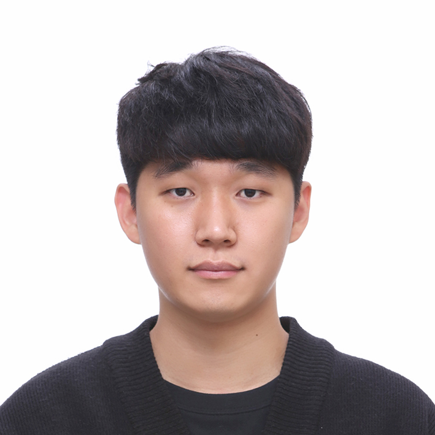
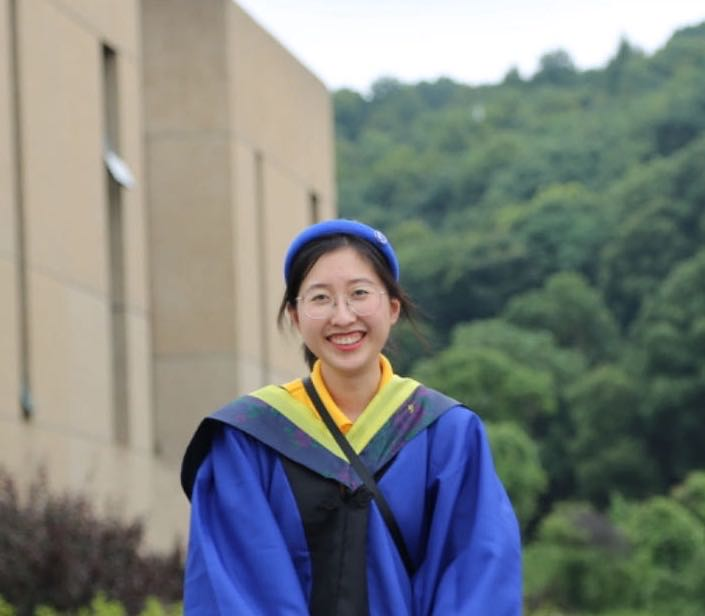
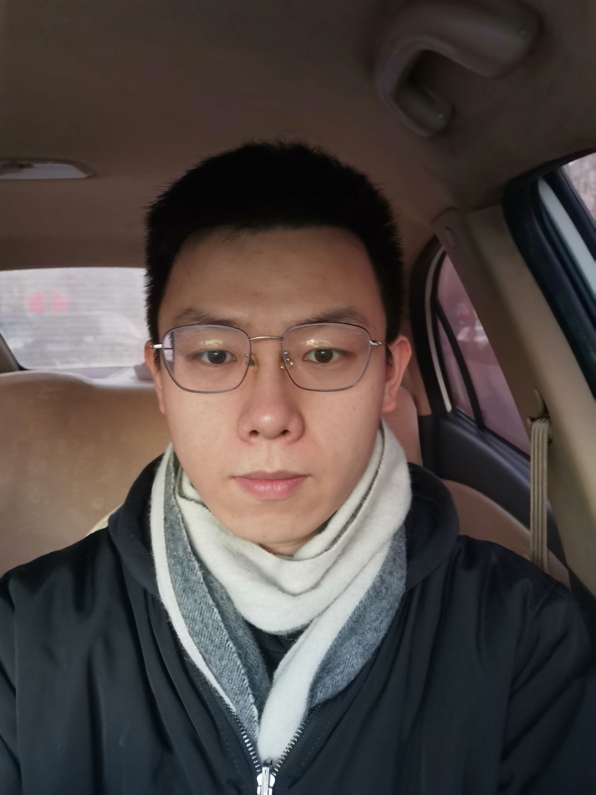
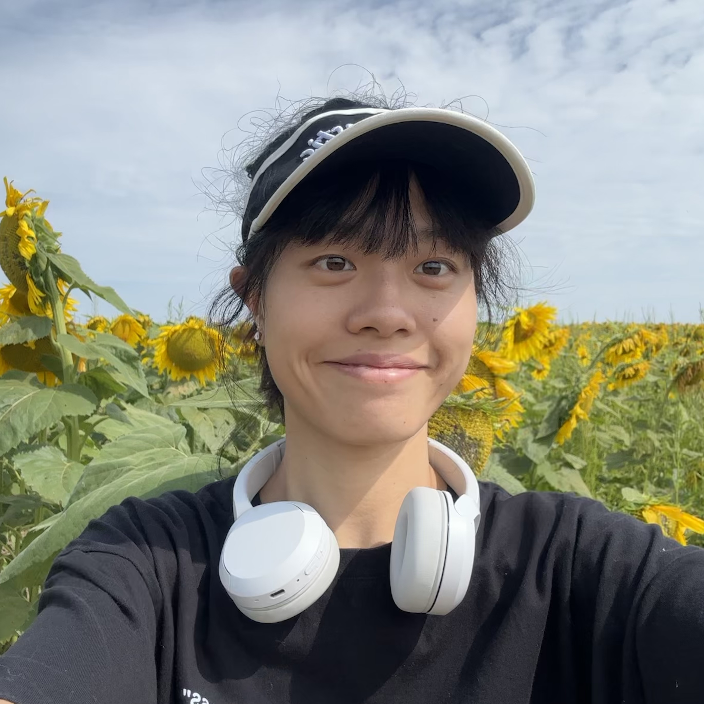
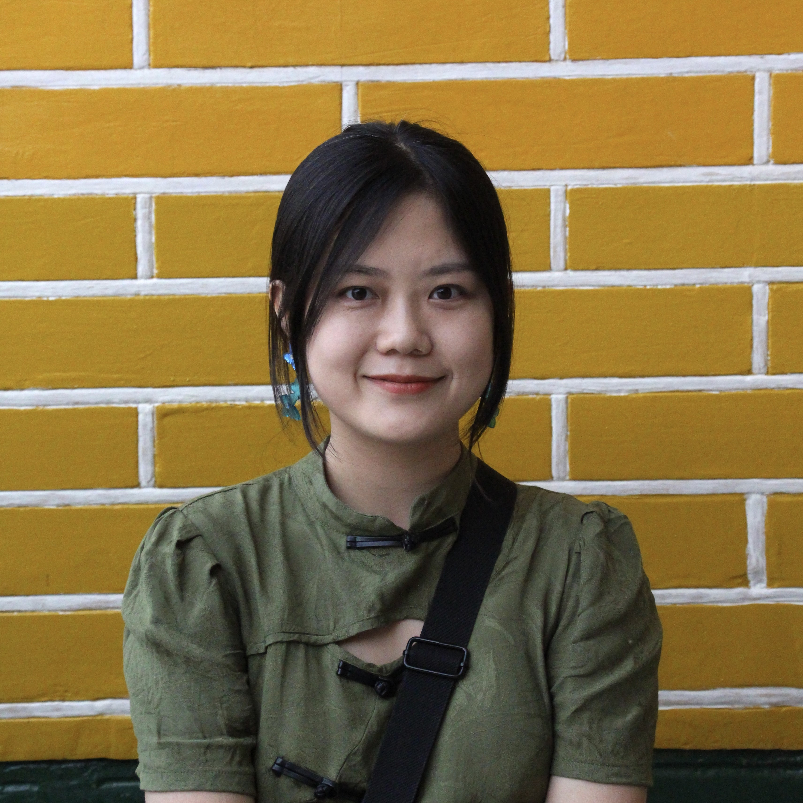
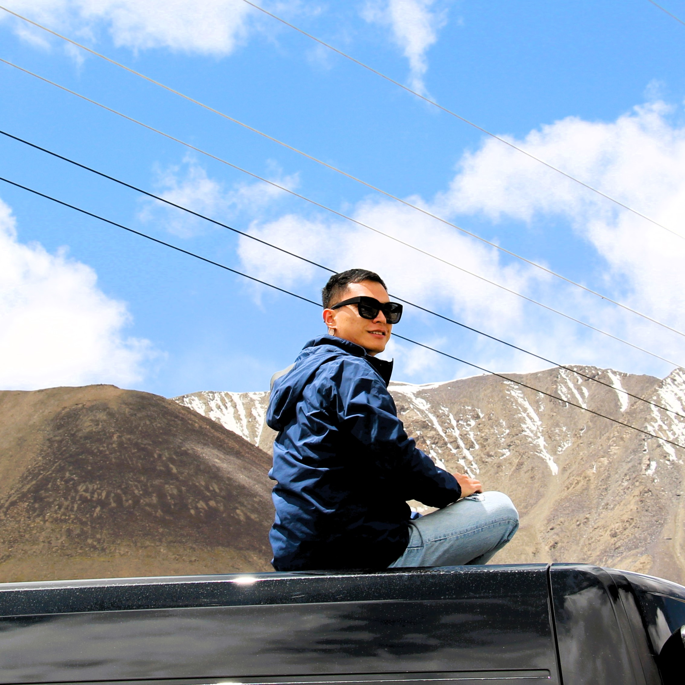
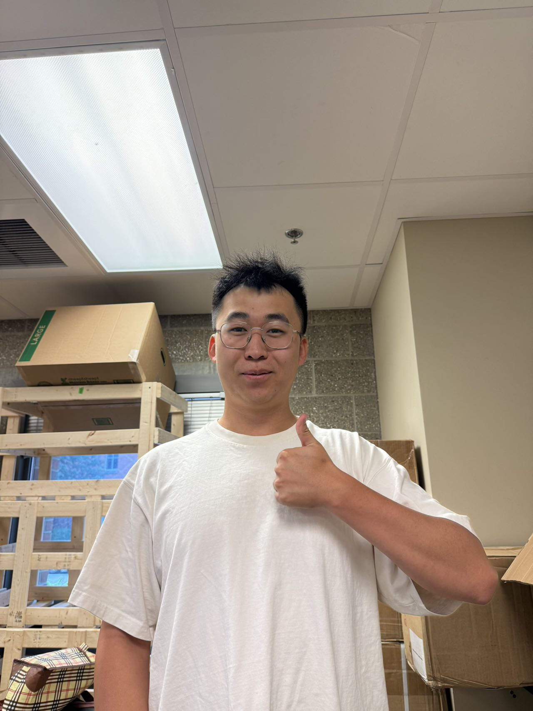

Yu Research Group
Postdoctoral Research Associates
 |
Gi-Gwan Kim (Ph.D., Gwangju Institute of Science and Technology, South Korea) Google Scholar |
 |
Zhoulyu Rao (Ph.D., U of Houston) Google Scholar |

|
Faheem Ershad (Ph.D., Penn State) Google Scholar |

|
Ming Yang (Ph.D., Huazhong University of Science and Technology, China) |
PhD Students
 |
Shubham Patel (M.S., U of Houston) Ph.D. Student, Department of Engineering Science and Mechanics (Penn State) Google Scholar |

|
Muhammad Zubair (B.Tech, Jawaharlal Nehru Technological University Kakinada, India) Ph.D. Student, Department of Biomedical Engineering (Penn State) Google Scholar |
|  |
Junkyu Ha (M.S., Hanyang University, South Korea) Ph.D. Student, Department of Bioengineering |
|  |
Wenjing Song (M.S., Hunan University, China) Ph.D. Student, Department of Electrical and Computer Engineering |
|  |
Xiaoyang Wang (M.S., East China University of Science and Technology) Ph.D. Student, Department of Materials Science and Engineering |
|  |
Na Yang (B.Eng., Sun Yat-sen University, China) Ph.D. Student, Department of Bioengineering |
|  |
Huan Li (M.S., Tsinghua University, China) Ph.D. Student, Department of Electrical and Computer Engineering |
|  |
Kefei Shi (M.S., Tsinghua University, China) Ph.D. Student, Department of Materials Science and Engineering |
|  |
Shiyuan Duan (M.S., Northwestern, USA) Ph.D. Student, Department of Electrical and Computer Engineering |
Master Students
|
Haojun Xu Department of Electrical and Computer Engineering |
Undergraduate Students
|
Mike Yu Department of Biomedical Engineering |
Former Members
| Name | Role | Next Position |
|---|---|---|
| Seonmin Jang | PhD (2019-2024) | |
| Yuntao Lu | PhD (2018-2024) | |
| Sumi Sekhar | M.S. (2022-2024) | |
| Hyunseok Shim | PhD (2017-2021), Postdoc (2021-2022) | Assistant Professor, Pusan Natinoal University, South Korea |
| Lei Gonzalez | B.S & M.S. (2018-2021) | NeoGenomics |
| Bin Kan | Postdoc 2020-2021 | Tenure-Track faculty, Nankai University, China |
| Yingshi Guan | Postdoc 2018-2021 | Professor, Southeast University, China |
| Anish Thukral | PhD (2017-2020) | PARC(Palo Alto Research Center) |
| Phillip Comeaux | B.S & M.S. (2018-2020) | PhD student at University of Utah |
| Wei Lan | Visiting scholar, 2020 | Professor at Lanzhou University, China |
| Peng Wang | Visiting scholar, 2019 | Associate Professor at Lanzhou University, China |
| Kyoseung Sim | PhD (2014-2018), Postdoc (2018-2020) | Assistant Professor, Ulsan National Institute of Science and Technology (UNIST), South Korea |
| Haejin Kim | Postdoc,2016-2018 | Associate Professor, Yonsei University, South Korea | Yang Gao | Post-doc, 2014-2015 | Professor, East China University of Science and Technology, China | Xu Wang | PhD (2015-2019) | Postdoc, Houston Methodist Research Institute | Nada Enan | M.S. (2017-2018) | Worley | Dong Yang | Visiting student, 2017 | PhD student at University of Science and Technology, China | Jianming Lei | Visiting student, 2015-2017 | PhD student at Nanjing University, China | Chengjun Wang | Visiting student, 2016 | PhD student at Zhejiang University, China | Nora Elghetany | Undergraduate,2015-2016 | PhD student at University of California | Jie Chen | Visiting scholar, 2015-2016 | Associate Professor, Southeast University, China | Fan Yang | Visiting scholar, 2015 | Associate Professor, Tongji University, China | Minwei Xu | Visiting scholar, 2014 | Xi’an Jiao Tong University, China |